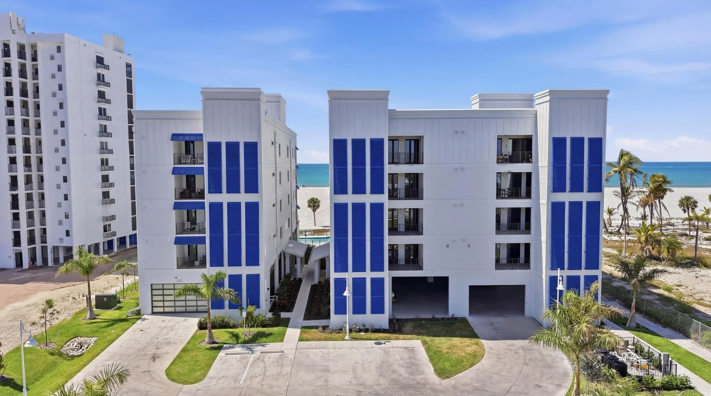

Getting a qualified quote for a commercial window replacement shouldn't take two weeks of phone tag, site visits that don't produce pricing, and vague "we'll get back to you" responses. For a building owner or property manager handling a multi-tenant office, a shopping center, or a mid-rise residential portfolio, the quote process often feels like the hardest part of the project. It doesn't have to be. What a legitimate commercial glazing sub needs to produce an accurate bid is specific and finite. Here's what to send when you request a quote, what a good bid looks like on the page, and what signals separate a contractor who will actually show up from one who won't.

What a Glazier Actually Needs from You
Most delays in the quote process trace back to incomplete information. A competent commercial glazing sub can produce a scoped, priced bid with five pieces of information - and usually less, if the project is small or standardized.
1. Plans, or Dimensioned Openings
Architectural drawings are ideal: elevations showing each opening, a schedule identifying each type, and sections showing the anchor condition. If drawings aren't available (common on re-skin and retrofit projects), a dimensioned takeoff suffices - width and height of each opening, quantity of each size, and a description of what's there now. Photos of typical openings help.
2. Scope Clarity
Are you replacing the existing windows like-for-like, or upgrading? Like-for-like is simpler: the new product replicates what's there. Upgrading typically means moving from non-impact to impact, from single-pane to IGU, or from anodized to Kynar - each of which changes the pricing, the product, and the lead time.
3. Building Type and Use
A shopping center has different glazing requirements than an office building, a church, or a multi-tenant residential. Building classification (Commercial, Assembly, Residential R-2, etc.) affects code compliance, safety glazing locations, fire-rated requirements, and anchor engineering. Tell the glazier the building's occupancy class and square footage.
4. Impact Requirements
Is the existing glazing impact-rated? If the replacement is in a wind-borne debris region (most of Florida's coastal counties), Florida Building Code Section 1609 requires impact-rated products for any opening below 30 feet above grade. Upgrading to impact glass is often a code-driven decision, not an optional one. Confirm this upfront.
5. Schedule Constraints
Does the work need to happen after hours? During a specific window to minimize tenant disruption? Before a lease commencement? Before hurricane season? Tell the glazier upfront so the quote reflects reality.
Submit this information through acglass.com/contact.html or the bid request page. ACG's Scope Engine walks you through the intake automatically and collects everything in one pass.
What a Good Commercial Glazing Bid Looks Like
A legitimate commercial glazing quote is not a single line item with a total dollar figure. It's a structured document that lets you see what you're buying. The minimum components:
Itemized Scope by Type
Each product type (storefront, impact window, entrance door, etc.) priced separately with quantities, unit sizes, and unit prices. If the glazing sub proposes alternates (different product, different glass buildup, different finish), those are priced separately as adds or deducts so you can see the cost implication of each decision.
Product Specifications
Named manufacturer, named product line, specific glass buildup, specific finish. "Impact windows" is not a spec. "ESWindows ES-200 impact window, 9/16" laminated IGU with PVB interlayer, surface 2 SunGuard SNX 51/23 low-E, dark bronze AAMA 2605 finish" is a spec. A bid without this level of detail invites substitutions later.
NOA or FL Product Approval References
The specific NOA or Florida Product Approval numbers that the proposed products carry. A bid that doesn't reference product approvals isn't referencing a legal product - it's waving at one.
Submittal Package Inclusions
Shop drawings, engineering, NOA documentation, product data sheets. For commercial work, all of these should be included in the bid, not itemized as "additional services." If the submittal package is excluded, the scope is incomplete.
Warranty Terms
Manufacturer product warranty (typically 1-10 years depending on component), glass seal warranty (typically 10 years on IGUs), finish warranty (typically 20 years on AAMA 2605), installation warranty (typically 1-5 years). Clear terms, not vague assurances.
Payment Schedule
Typical commercial glazing payment: 25-35% deposit at award, progress payments against material delivery and installation milestones, retainage held to punch. A bid asking for 100% upfront or 60% deposit is not industry standard and reflects cash-flow exposure for you.
Exclusions
What's not included - typically interior trim, exterior stucco repair, painting, perimeter flashing by others, abatement. A bid without an exclusions section is either sloppy or hiding future change orders.
What a Bad Bid Looks Like
For contrast, here's the pattern of a commercial glazing bid that won't hold up:
- No product name, no manufacturer, no spec
- No NOA or FL number
- No mention of shop drawings or submittals
- Payment terms asking for 50% deposit
- No exclusions listed
- No signatures required beyond the owner's - no engineering affidavit, no manufacturer authorization
This bid format is a license to substitute lower-priced product, skip submittals, change order the permit fees, and leave the project short on documentation. It's common on small commercial projects where the owner doesn't know to ask for more.
Pre-Glazed vs Stick-Built - Ask About It
For storefront replacements specifically, ask the glazing sub whether they're proposing a pre-glazed system or a stick-built system. Pre-glazed storefronts arrive at the jobsite as complete, factory-assembled units with glass already set - no field glazing required. That cuts install time roughly in half compared to stick-built, and factory conditions produce better-quality edge seals than any construction-site glazing. A quality Florida commercial glazier should offer pre-glazed systems (like ES-8000) for storefront work, not only stick-built. If a bid is stick-built only, the tenant disruption window will be longer and the edge-seal quality will be field-dependent.
Signals the Bidder Is Real
Certain markers consistently distinguish commercial glazing subs who deliver from those who don't:
- CGC license number visible on every document. No exceptions.
- 48-hour budget pricing. If the quote takes two weeks, the project will take proportionally longer.
- Factory-authorized manufacturer status for the products proposed, with documentation available on request.
- A named project manager assigned to the bid - not a rotating general inbox.
- References on request - not reluctantly.
- Insurance certificates produced within 24 hours of a request, naming your entity.
Timing Expectations
A typical Florida commercial window replacement bid, on standard-sized projects, should turn around in 48 to 72 hours from receipt of information. Larger or more complex projects may take 5 to 7 business days. Anything longer is a capacity or infrastructure problem on the sub's end, and often signals how they will perform under the project schedule.
After bid award, expect:
- Shop drawings first submit: 10-15 business days
- Architect review and approval: 10-20 business days
- Manufacturer fabrication: 4-8 weeks
- Delivery and field install: 1-4 weeks depending on scope
Total from award to install complete: 10 to 18 weeks on most commercial projects.
How ACG Handles Quote Requests
Send plans or a dimensioned takeoff through the ACG contact page, the bid request page, or through our Scope Engine intake. A named estimator picks up the scope within the business day, builds a takeoff against current 2026 unit pricing calibrated across recent projects, and returns a line-item bid - itemized, spec'd, NOA-referenced, with exclusions and alternates - within 48 hours. If the scope needs a site visit to verify conditions, the visit happens inside a week.
Examples of recent commercial glazing replacement work in Florida include projects at Gulf Harbour Country Club and Wild Blue Clubhouse, plus dozens more across our West Palm Beach and Tampa service territories.
Ready to get started?
Send plans, existing-condition photos, or a simple dimensioned list. ACG returns a line-item commercial glazing quote inside 48 hours - product-specific, NOA-referenced, no phone tag required.